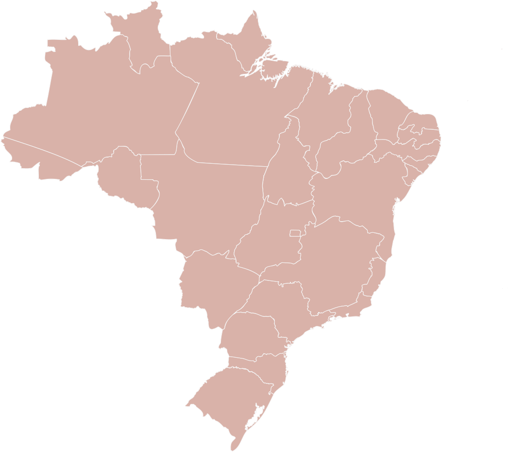

Mural de histórias
Você não está sozinho(a). Receba e ofereça apoio na companhia de outros cuidadores que compreendem a sua dor.
Veja de onde são contadas as Histórias
Você não está sozinho(a). Receba e ofereça apoio na companhia de outros cuidadores que compreendem a sua dor.
